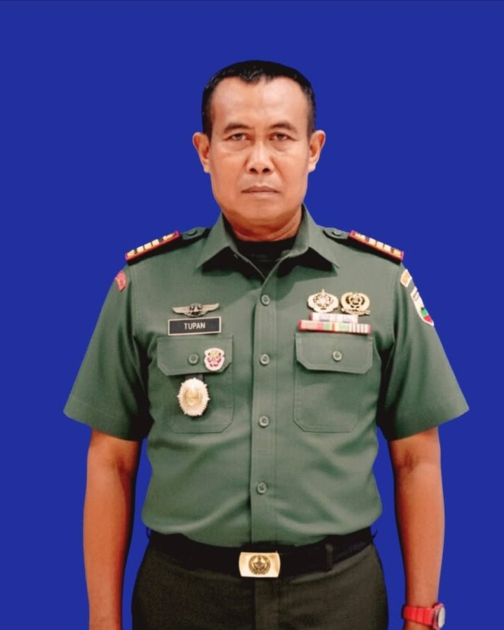

Danramil 08/Secanggang
Puji dan syukur kita panjatkan ke hadirat Tuhan Yang Maha Esa atas segala rahmat dan karunia-Nya, sehingga Website Koramil 08/Secanggang dapat hadir sebagai media informasi, komunikasi, dan pelayanan kepada masyarakat. Kehadiran website ini merupakan salah satu bentuk upaya Koramil 08/Secanggang dalam memanfaatkan perkembangan teknologi informasi untuk memberikan layanan yang lebih cepat, mudah, transparan, dan dapat diakses oleh seluruh lapisan masyarakat.
Koramil 08/Secanggang memiliki tugas untuk melaksanakan pembinaan teritorial, menjaga keamanan dan ketertiban wilayah, serta membangun hubungan yang harmonis dengan seluruh elemen masyarakat. Dalam menjalankan tugas tersebut, kami selalu berpedoman pada nilai-nilai profesionalisme, disiplin, tanggung jawab, dan semangat pengabdian kepada bangsa dan negara.
Melalui website ini, kami berupaya menyajikan berbagai informasi mengenai profil Koramil, kegiatan Babinsa, program ketahanan pangan, karya bakti, bakti sosial, pembinaan masyarakat, serta berbagai kegiatan lainnya yang dilaksanakan di wilayah binaan. Kami berharap seluruh informasi yang disajikan dapat memberikan manfaat, meningkatkan keterbukaan informasi, serta mempererat hubungan antara Koramil dengan masyarakat.
Kami menyadari bahwa keberhasilan dalam menjaga keamanan, ketertiban, dan mendukung pembangunan wilayah tidak dapat terwujud tanpa adanya kerja sama yang baik antara aparat dan masyarakat. Oleh karena itu, kami mengajak seluruh masyarakat untuk terus menjaga persatuan dan kesatuan, meningkatkan rasa kepedulian terhadap lingkungan, serta bersama-sama menciptakan suasana yang aman, damai, dan kondusif.
Website ini juga diharapkan menjadi sarana komunikasi yang efektif bagi masyarakat untuk memperoleh informasi terbaru mengenai kegiatan Koramil 08/Secanggang. Kami akan terus berupaya meningkatkan kualitas pelayanan dan penyampaian informasi agar masyarakat dapat memperoleh informasi yang akurat, terpercaya, dan bermanfaat..
KAPTEN ARH TUPAN
Danramil 08/Secanggang
Terwujudnya Koramil 08/Secanggang yang profesional, modern, adaptif, dan terpercaya dalam melaksanakan pembinaan teritorial, memperkokoh kemanunggalan TNI dengan rakyat, menjaga keamanan dan ketertiban wilayah, serta mendukung pembangunan daerah guna mewujudkan masyarakat Kecamatan Secanggang yang aman, sejahtera, mandiri, dan berwawasan kebangsaan.”.